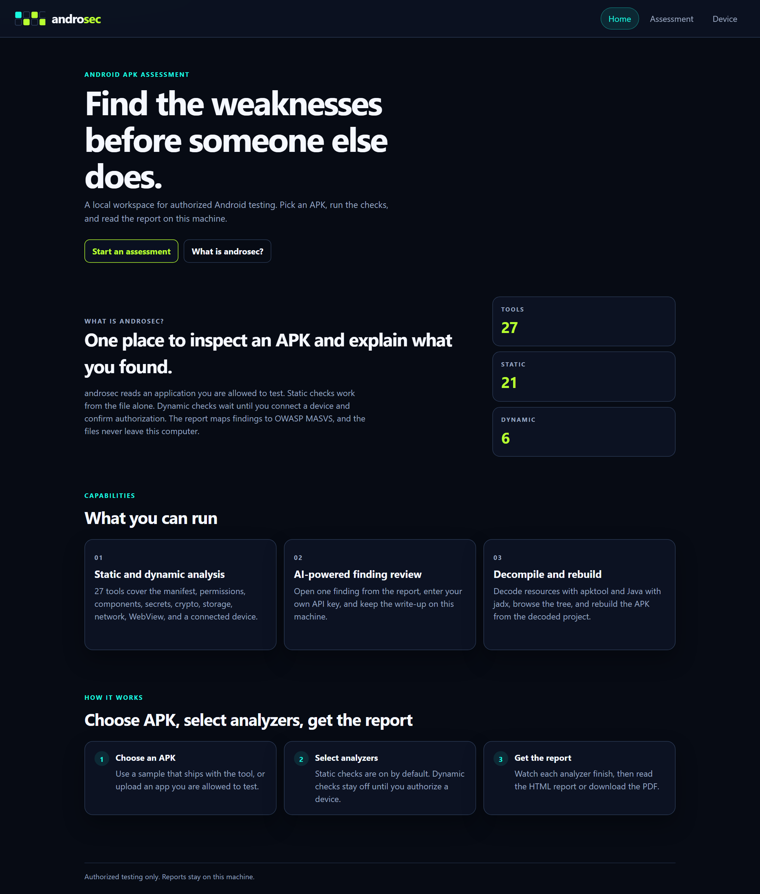

Home
Landing page for the androsec assessment workspace.
Introduces the King Saud University graduation project: local APK assessment with static and dynamic analyzers, MASVS-mapped reports, and AI-assisted exploitation that stays on this machine. From here the user starts an assessment or reviews what the framework can run.
Live URL http://127.0.0.1:5000/